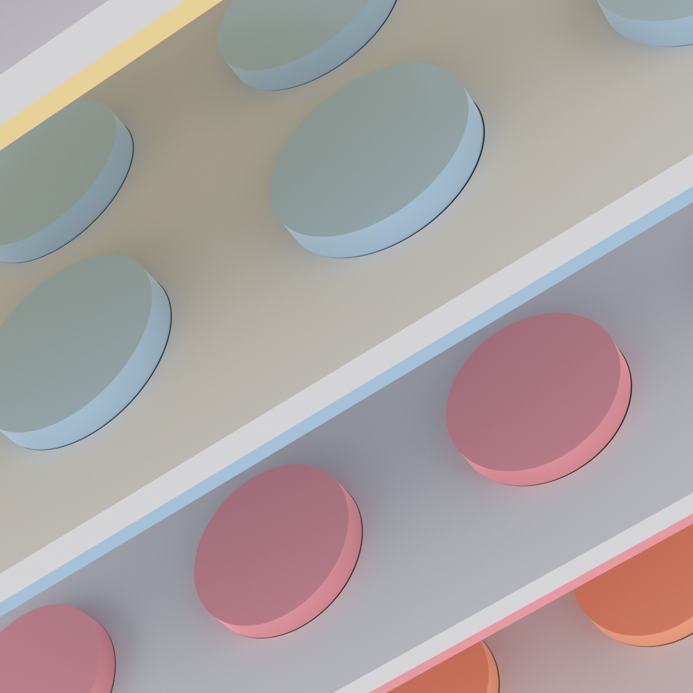
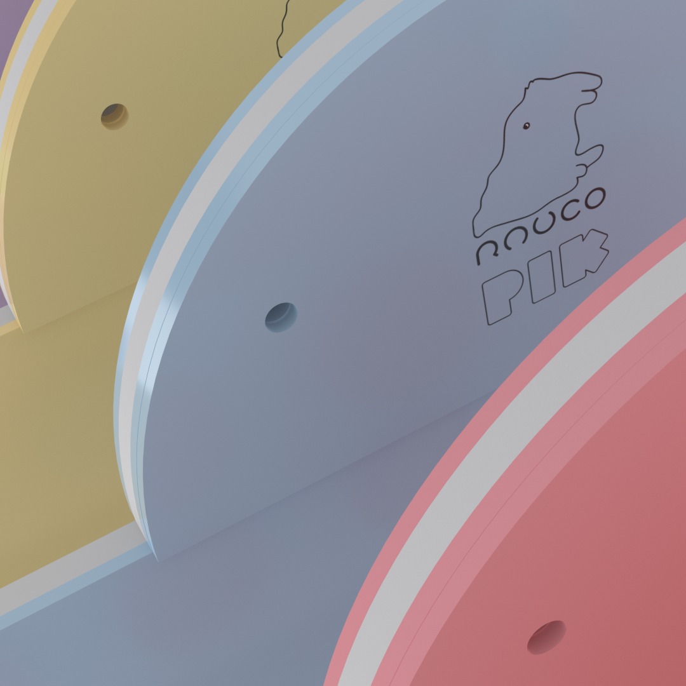

<?xml version="1.0" encoding="UTF-8" ?>
<rss version="2.0">

<channel>
  <title>Rauco Design</title>
  <link>https://www.raucodesign.com</link>
  <description>Top quality MIDI controllers</description>
  <item>
    <title>Rauco Design provides top quality MIDI controllers. Enjoy the best features available in the industry and take your live performance to the next level. </title>
    <link>https://www.raucodesign.com/feed</link>
    <description> <p>
                    <strong>PIK</strong> is designed with the <strong>latest technology</strong>, including <strong>Bluetooth connectivity with ultra low latency</strong> and a full range of <strong>exciting features</strong>. <strong>PIK</strong> come with a full range of <strong>MIDI controls</strong>, as well as integrated <strong>audio and video capabilities</strong>, so you can use your <strong>PIK</strong> with <strong>any type of music software.</strong>
                </p> <p>
                    From <strong>hardware and software customisation</strong> to <strong>sound packs</strong>, we have everything you need to <strong>make your music sound the best it can</strong>, and if you ever run into any issues, our <strong>friendly support team</strong> is always on hand to help.</p> <p>
                    <strong>PIK it's incredibly easy to use.</strong><strong> Our intuitive software allows you to quickly get up and running</strong>, and our extensive library of tutorials and help guides make it easy to get the most out of your controller.
                </p></description>
  </item>
 
</channel>

</rss>